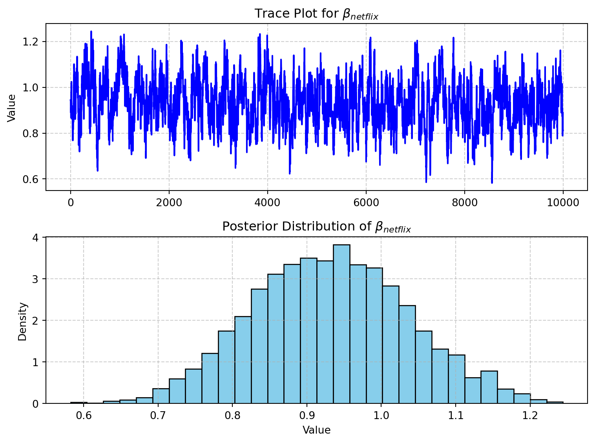
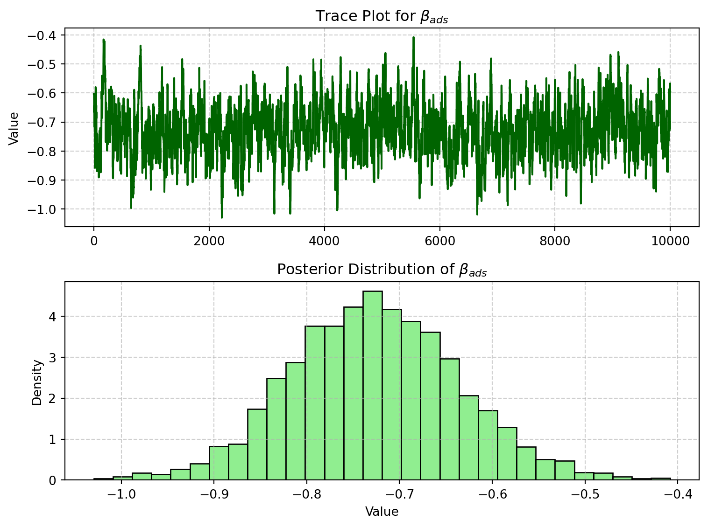

import numpy as np
import pandas as pd
# Set seed
np.random.seed(123)
# Attribute levels
brands = ["N", "P", "H"]
ads = ["Yes", "No"]
prices = np.arange(8, 33, 4)
# All profiles
from itertools import product
profiles = pd.DataFrame(list(product(brands, ads, prices)), columns=["brand", "ad", "price"])
m = len(profiles)
# True part-worths
b_util = {"N": 1.0, "P": 0.5, "H": 0.0}
a_util = {"Yes": -0.8, "No": 0.0}
p_util = lambda p: -0.1 * p
# Design
n_peeps = 100
n_tasks = 10
n_alts = 3
# Simulate one respondent
def sim_one(id):
records = []
for t in range(1, n_tasks + 1):
sample_profiles = profiles.sample(n=n_alts).copy()
sample_profiles["resp"] = id
sample_profiles["task"] = t
sample_profiles["v"] = (
sample_profiles["brand"].map(b_util) +
sample_profiles["ad"].map(a_util) +
sample_profiles["price"].apply(p_util)
).round(10)
sample_profiles["e"] = -np.log(-np.log(np.random.uniform(size=n_alts)))
sample_profiles["u"] = sample_profiles["v"] + sample_profiles["e"]
sample_profiles["choice"] = (sample_profiles["u"] == sample_profiles["u"].max()).astype(int)
records.append(sample_profiles[["resp", "task", "brand", "ad", "price", "choice"]])
return pd.concat(records)
# Simulate all
conjoint_data = pd.concat([sim_one(i) for i in range(1, n_peeps + 1)], ignore_index=True)Multinomial Logit Model
This assignment explores two methods for estimating the MNL model: (1) via Maximum Likelihood, and (2) via a Bayesian approach using a Metropolis-Hastings MCMC algorithm.
1. Likelihood for the Multi-nomial Logit (MNL) Model
Suppose we have \(i=1,\ldots,n\) consumers who each select exactly one product \(j\) from a set of \(J\) products. The outcome variable is the identity of the product chosen \(y_i \in \{1, \ldots, J\}\) or equivalently a vector of \(J-1\) zeros and \(1\) one, where the \(1\) indicates the selected product. For example, if the third product was chosen out of 3 products, then either \(y=3\) or \(y=(0,0,1)\) depending on how we want to represent it. Suppose also that we have a vector of data on each product \(x_j\) (eg, brand, price, etc.).
We model the consumer’s decision as the selection of the product that provides the most utility, and we’ll specify the utility function as a linear function of the product characteristics:
\[ U_{ij} = x_j'\beta + \epsilon_{ij} \]
where \(\epsilon_{ij}\) is an i.i.d. extreme value error term.
The choice of the i.i.d. extreme value error term leads to a closed-form expression for the probability that consumer \(i\) chooses product \(j\):
\[ \mathbb{P}_i(j) = \frac{e^{x_j'\beta}}{\sum_{k=1}^Je^{x_k'\beta}} \]
For example, if there are 3 products, the probability that consumer \(i\) chooses product 3 is:
\[ \mathbb{P}_i(3) = \frac{e^{x_3'\beta}}{e^{x_1'\beta} + e^{x_2'\beta} + e^{x_3'\beta}} \]
A clever way to write the individual likelihood function for consumer \(i\) is the product of the \(J\) probabilities, each raised to the power of an indicator variable (\(\delta_{ij}\)) that indicates the chosen product:
\[ L_i(\beta) = \prod_{j=1}^J \mathbb{P}_i(j)^{\delta_{ij}} = \mathbb{P}_i(1)^{\delta_{i1}} \times \ldots \times \mathbb{P}_i(J)^{\delta_{iJ}}\]
Notice that if the consumer selected product \(j=3\), then \(\delta_{i3}=1\) while \(\delta_{i1}=\delta_{i2}=0\) and the likelihood is:
\[ L_i(\beta) = \mathbb{P}_i(1)^0 \times \mathbb{P}_i(2)^0 \times \mathbb{P}_i(3)^1 = \mathbb{P}_i(3) = \frac{e^{x_3'\beta}}{\sum_{k=1}^3e^{x_k'\beta}} \]
The joint likelihood (across all consumers) is the product of the \(n\) individual likelihoods:
\[ L_n(\beta) = \prod_{i=1}^n L_i(\beta) = \prod_{i=1}^n \prod_{j=1}^J \mathbb{P}_i(j)^{\delta_{ij}} \]
And the joint log-likelihood function is:
\[ \ell_n(\beta) = \sum_{i=1}^n \sum_{j=1}^J \delta_{ij} \log(\mathbb{P}_i(j)) \]
2. Simulate Conjoint Data
We will simulate data from a conjoint experiment about video content streaming services. We elect to simulate 100 respondents, each completing 10 choice tasks, where they choose from three alternatives per task. For simplicity, there is not a “no choice” option; each simulated respondent must select one of the 3 alternatives.
Each alternative is a hypothetical streaming offer consistent of three attributes: (1) brand is either Netflix, Amazon Prime, or Hulu; (2) ads can either be part of the experience, or it can be ad-free, and (3) price per month ranges from $4 to $32 in increments of $4.
The part-worths (ie, preference weights or beta parameters) for the attribute levels will be 1.0 for Netflix, 0.5 for Amazon Prime (with 0 for Hulu as the reference brand); -0.8 for included adverstisements (0 for ad-free); and -0.1*price so that utility to consumer \(i\) for hypothethical streaming service \(j\) is
\[ u_{ij} = (1 \times Netflix_j) + (0.5 \times Prime_j) + (-0.8*Ads_j) - 0.1\times Price_j + \varepsilon_{ij} \]
where the variables are binary indicators and \(\varepsilon\) is Type 1 Extreme Value (ie, Gumble) distributed.
The following code provides the simulation of the conjoint data.
3. Preparing the Data for Estimation
The “hard part” of the MNL likelihood function is organizing the data, as we need to keep track of 3 dimensions (consumer \(i\), covariate \(k\), and product \(j\)) instead of the typical 2 dimensions for cross-sectional regression models (consumer \(i\) and covariate \(k\)). The fact that each task for each respondent has the same number of alternatives (3) helps. In addition, we need to convert the categorical variables for brand and ads into binary variables.
We begin by reading in the simulated conjoint dataset, which contains responses from 100 individuals, each completing 10 choice tasks. For each task, the respondent selects one option from a set of 3 hypothetical streaming service profiles, characterized by brand, ad presence, and monthly price.
The data are structured in long format, with each row representing a single alternative within a choice task. The choice column indicates which alternative was selected by the respondent.
import pandas as pd
# Load the conjoint data
df_conjoint = pd.read_csv("conjoint_data.csv")
# Preview structure and first few rows
df_conjoint.head()| resp | task | choice | brand | ad | price | |
|---|---|---|---|---|---|---|
| 0 | 1 | 1 | 1 | N | Yes | 28 |
| 1 | 1 | 1 | 0 | H | Yes | 16 |
| 2 | 1 | 1 | 0 | P | Yes | 16 |
| 3 | 1 | 2 | 0 | N | Yes | 32 |
| 4 | 1 | 2 | 1 | P | Yes | 16 |
df_conjoint.info()<class 'pandas.core.frame.DataFrame'>
RangeIndex: 3000 entries, 0 to 2999
Data columns (total 6 columns):
# Column Non-Null Count Dtype
--- ------ -------------- -----
0 resp 3000 non-null int64
1 task 3000 non-null int64
2 choice 3000 non-null int64
3 brand 3000 non-null object
4 ad 3000 non-null object
5 price 3000 non-null int64
dtypes: int64(4), object(2)
memory usage: 140.8+ KBTo estimate a multinomial logit (MNL) model, we need to reshape the conjoint dataset into a format where each row corresponds to an alternative within a respondent-task, and each alternative is described by a consistent set of binary covariates.
This is more complex than typical regression data, because we must handle three dimensions simultaneously:
\(i\): the respondent
\(t\): the task
\(j\): the alternative within the task.
We also convert categorical variables (brand and ad) into dummy variables. This will yield a feature matrix where each alternative is fully described in numeric form and ready for likelihood evaluation.
# Create dummy variables
df_dummies = pd.get_dummies(df_conjoint, columns=['brand', 'ad'], drop_first=True)
# Sort by respondent and task
df_dummies = df_dummies.sort_values(by=['resp', 'task']).reset_index(drop=True)
# Preview reshaped data
df_dummies.head()| resp | task | choice | price | brand_N | brand_P | ad_Yes | |
|---|---|---|---|---|---|---|---|
| 0 | 1 | 1 | 1 | 28 | 1 | 0 | 1 |
| 1 | 1 | 1 | 0 | 16 | 0 | 0 | 1 |
| 2 | 1 | 1 | 0 | 16 | 0 | 1 | 1 |
| 3 | 1 | 2 | 0 | 32 | 1 | 0 | 1 |
| 4 | 1 | 2 | 1 | 16 | 0 | 1 | 1 |
We now have a cleaned and reshaped dataset with binary indicators for each attribute level. Specifically:
brand_Nandbrand_Pusebrand_Has the reference category.ad_Yesindicates whether the alternative includes ads (ad_Nois the baseline).
This format allows us to easily construct the design matrix \(X\) and choice indicator vector \(y\) for maximum likelihood estimation in the next step.
4. Estimation via Maximum Likelihood
With our data reshaped and binary covariates prepared, we can now define the log-likelihood function for the multinomial logit model. The function computes the log probability of observing each chosen alternative, given the model parameters \(\beta\), and returns the sum across all observations.
def mnl_log_likelihood(beta, X, y, group_ids):
"""
Compute the negative log-likelihood for the Multinomial Logit model.
Parameters:
- beta: array of shape (K,), the coefficient vector
- X: array of shape (N, K), design matrix
- y: array of shape (N,), 1 if chosen, 0 otherwise
- group_ids: array of shape (N,), group ID (e.g., task ID)
Returns:
- Negative log-likelihood (scalar)
"""
Xb = X @ beta
exp_Xb = np.exp(Xb)
# Grouped softmax denominator: sum of exp(Xb) within each task
df = pd.DataFrame({'exp_Xb': exp_Xb, 'group': group_ids})
denom = df.groupby('group')['exp_Xb'].transform('sum')
# Predicted probabilities
probs = exp_Xb / denom
# Log-likelihood for observed choices
log_lik = np.log(probs[y == 1])
return -np.sum(log_lik) # Negative for minimizationThis function takes as input:
X: the flat feature matrixy: a 0/1 vector indicating which alternatives were chosengroup_ids: identifiers for each choice set (e.g., respondent-task)
It returns the negative log-likelihood, which we will minimize during estimation. This implementation uses groupby to compute softmax denominators within each task efficiently.
We begin by constructing the feature matrix X, the choice vector y, and the group identifiers for each respondent-task choice set. We then use scipy.optimize.minimize() to estimate the coefficients of a Multinomial Logit model via maximum likelihood.
# Construct X matrix
X = df_dummies[["brand_P", "brand_N", "ad_Yes", "price"]].values
# Construct y (1 if alternative was chosen, 0 otherwise)
y = df_dummies["choice"].values
# Create group identifiers: one for each respondent-task pair
group_ids = df_dummies["resp"].astype(str) + "-" + df_dummies["task"].astype(str)
group_ids_encoded = pd.factorize(group_ids)[0]
X.shape, y.shape((3000, 4), (3000,))With the log-likelihood function defined and the feature matrix constructed, we now use scipy.optimize.minimize() to estimate the MLEs of the four parameters in the Multinomial Logit model:
\(\beta_{\text{prime}}\)
\(\beta_{\text{netflix}}\)
\(\beta_{\text{ads}}\)
\(\beta_{\text{price}}\)
We also calculate standard errors using the inverse Hessian matrix, and construct 95% confidence intervals for each coefficient.
from scipy.optimize import minimize
# Initial guess for beta (length = number of columns in X)
initial_beta = np.zeros(X.shape[1])
# Run optimization
result = minimize(
fun=mnl_log_likelihood,
x0=initial_beta,
args=(X, y, group_ids_encoded),
method='BFGS'
)
# Extract coefficient estimates
beta_hat = result.x
# Compute standard errors from the inverse Hessian
vcov = result.hess_inv if isinstance(result.hess_inv, np.ndarray) else result.hess_inv.todense()
se = np.sqrt(np.diag(vcov))
# 95% confidence intervals
ci_lower = beta_hat - 1.96 * se
ci_upper = beta_hat + 1.96 * se
# Build result table
summary_mnl = pd.DataFrame({
"Coefficient": beta_hat,
"Std. Error": se,
"95% CI Lower": ci_lower,
"95% CI Upper": ci_upper
}, index=["β_prime", "β_netflix", "β_ads", "β_price"]).round(4)
summary_mnl| Coefficient | Std. Error | 95% CI Lower | 95% CI Upper | |
|---|---|---|---|---|
| β_prime | 0.5016 | 0.1207 | 0.2650 | 0.7382 |
| β_netflix | 0.9412 | 0.1144 | 0.7170 | 1.1654 |
| β_ads | -0.7320 | 0.0886 | -0.9057 | -0.5583 |
| β_price | -0.0995 | 0.0064 | -0.1119 | -0.0870 |
The table above shows the estimated coefficients from the Multinomial Logit model, along with standard errors and 95% confidence intervals. These coefficients represent how each attribute affects the utility of a product alternative, and ultimately the probability of being chosen.
\(\beta_{\text{netflix}} = 0.9412\): Netflix has the highest positive utility relative to the baseline brand (Hulu), indicating that all else equal, consumers strongly prefer Netflix. The 95% confidence interval does not include zero, so this effect is statistically significant.
\(\beta_{\text{prime}} = 0.5016\): Amazon Prime also has a positive and significant effect on utility, but its coefficient is about half that of Netflix. This suggests consumers prefer Prime over Hulu, but not as strongly as Netflix.
\(\beta_{\text{ads}} = -0.7320\): The presence of ads significantly reduces the utility of a product. This is consistent with consumer preferences for ad-free experiences, and the confidence interval confirms the effect is highly significant.
\(\beta_{\text{price}} = -0.0995\): As expected, price negatively affects utility. The small magnitude reflects that utility decreases gradually with each dollar increase in monthly price. The coefficient is tightly estimated with a narrow confidence interval, showing strong evidence of price sensitivity.
Overall, the model recovers the data-generating process well. All four coefficients are statistically significant and their signs align with theoretical expectations and how we simulated the conjoint data.
5. Estimation via Bayesian Methods
We now estimate the MNL model using a Bayesian approach via the Metropolis-Hastings (MH) algorithm. Our goal is to approximate the posterior distribution of the model parameters using 11,000 MCMC samples, discarding the first 1,000 as burn-in and retaining the remaining 10,000 draws for inference.
We use a simple random-walk proposal and a flat (uniform) prior, so the acceptance ratio simplifies to the ratio of likelihoods.
import numpy as np
# Reuse log-likelihood function from MLE step
def log_likelihood(beta, X, y, group_ids):
Xb = X @ beta
exp_Xb = np.exp(Xb)
df_temp = pd.DataFrame({'exp_Xb': exp_Xb, 'group': group_ids})
denom = df_temp.groupby('group')['exp_Xb'].transform('sum')
probs = exp_Xb / denom
return np.sum(np.log(probs[y == 1]))
# Define log-prior function based on N(0,5) and N(0,1)
def log_prior(beta):
# First 3: N(0, 5^2), last 1: N(0, 1^2)
lp = -0.5 * ((beta[:3] / 5)**2).sum() - 0.5 * (beta[3] / 1)**2
return lp
# Combine into log-posterior
def log_posterior(beta, X, y, group_ids):
return log_likelihood(beta, X, y, group_ids) + log_prior(beta)
# MCMC setup
n_iter = 11000
burn_in = 1000
n_params = X.shape[1]
samples = np.zeros((n_iter, n_params))
accept_count = 0
# Proposal std dev: [0.05, 0.05, 0.05, 0.005]
proposal_sd = np.array([0.05, 0.05, 0.05, 0.005])
# Initialize
beta_current = np.zeros(n_params)
log_post_current = log_posterior(beta_current, X, y, group_ids_encoded)
for i in range(n_iter):
# Propose new beta using independent normal steps
beta_prop = beta_current + np.random.normal(0, proposal_sd)
log_post_prop = log_posterior(beta_prop, X, y, group_ids_encoded)
# MH acceptance
log_ratio = log_post_prop - log_post_current
if np.log(np.random.rand()) < log_ratio:
beta_current = beta_prop
log_post_current = log_post_prop
accept_count += 1
samples[i, :] = beta_currentWe now discard the first 1,000 draws as burn-in and retain the remaining 10,000 draws from the posterior distribution.
posterior_samples = samples[burn_in:, :]
posterior_samples.shape(10000, 4)To assess convergence and explore the posterior distribution of the \(\beta_{netflix}\) parameter, we plot both the trace of sampled values over iterations and the histogram of the retained posterior draws (after burn-in).
The trace plot (top) shows that the sampler mixes well and explores the parameter space without visible trends or stickiness, suggesting convergence.
The posterior histogram (bottom) reveals that the posterior distribution is approximately normal and centered near 0.94 — consistent with the MLE estimate from the earlier section.
This gives us confidence that the Metropolis-Hastings sampler has produced a reliable approximation to the posterior distribution of this parameter.
import matplotlib.pyplot as plt
# Select β_netflix samples (index 1)
beta_netflix_samples = posterior_samples[:, 1]
# Create trace + histogram plot
fig, axs = plt.subplots(2, 1, figsize=(8, 6), sharex=False)
# Trace plot
axs[0].plot(beta_netflix_samples, color='blue')
axs[0].set_title("Trace Plot for $\\beta_{netflix}$")
axs[0].set_ylabel("Value")
axs[0].grid(True, linestyle="--", alpha=0.6)
# Posterior histogram
axs[1].hist(beta_netflix_samples, bins=30, color='skyblue', edgecolor='black', density=True)
axs[1].set_title("Posterior Distribution of $\\beta_{netflix}$")
axs[1].set_xlabel("Value")
axs[1].set_ylabel("Density")
axs[1].grid(True, linestyle="--", alpha=0.6)
plt.tight_layout()
plt.show()
From the trace plot, we observe good mixing behavior — the chain moves fluidly around the posterior support without getting stuck. The posterior histogram shows that \(\beta_{netflix}\) is tightly centered around its MLE estimate (approximately 0.94), with some spread reflecting posterior uncertainty.
Below we show the trace plot and posterior histogram for \(\beta_{ads}\), which represents the disutility associated with advertisements. This analysis helps verify MCMC convergence and understand the shape and uncertainty of the posterior distribution.
import matplotlib.pyplot as plt
beta_ads_samples = posterior_samples[:, 2]
fig, axs = plt.subplots(2, 1, figsize=(8, 6), sharex=False)
# Trace plot
axs[0].plot(beta_ads_samples, color='darkgreen')
axs[0].set_title("Trace Plot for $\\beta_{ads}$")
axs[0].set_ylabel("Value")
axs[0].grid(True, linestyle="--", alpha=0.6)
# Histogram
axs[1].hist(beta_ads_samples, bins=30, color='lightgreen', edgecolor='black', density=True)
axs[1].set_title("Posterior Distribution of $\\beta_{ads}$")
axs[1].set_xlabel("Value")
axs[1].set_ylabel("Density")
axs[1].grid(True, linestyle="--", alpha=0.6)
plt.tight_layout()
plt.show()
We observe that the trace plot for \(\beta_{ads}\) demonstrates good mixing and no visible autocorrelation patterns, suggesting convergence. The histogram confirms a unimodal and symmetric posterior distribution, centered near −0.73, which aligns well with our maximum likelihood estimate. This supports the strong negative impact of advertisements on consumer utility.
This confirms that our Metropolis-Hastings sampler is producing stable and meaningful estimates of the posterior distribution.
The table below reports the posterior mean, posterior standard deviation, and the 95% credible interval for each of the four model parameters, based on 10,000 MCMC draws after burn-in.
# Compute posterior summaries
posterior_means = posterior_samples.mean(axis=0)
posterior_sds = posterior_samples.std(axis=0)
ci_lower = np.percentile(posterior_samples, 2.5, axis=0)
ci_upper = np.percentile(posterior_samples, 97.5, axis=0)
# Combine into DataFrame
posterior_summary = pd.DataFrame({
"Posterior Mean": posterior_means,
"Posterior SD": posterior_sds,
"2.5% CI": ci_lower,
"97.5% CI": ci_upper
}, index=["β_prime", "β_netflix", "β_ads", "β_price"]).round(4)
posterior_summary| Posterior Mean | Posterior SD | 2.5% CI | 97.5% CI | |
|---|---|---|---|---|
| β_prime | 0.4926 | 0.1055 | 0.2815 | 0.7038 |
| β_netflix | 0.9314 | 0.1048 | 0.7307 | 1.1436 |
| β_ads | -0.7270 | 0.0912 | -0.9041 | -0.5426 |
| β_price | -0.0997 | 0.0064 | -0.1120 | -0.0875 |
The table above reports the posterior mean, standard deviation, and 95% credible intervals for the four parameters in the Multinomial Logit model. When we compare these values to the corresponding Maximum Likelihood Estimates (MLEs), we observe strong consistency across all parameters:
\(\beta_{netflix}\): The posterior mean is 0.9314 and the MLE is 0.9412 — nearly identical. Both estimates clearly show a strong positive preference for Netflix compared to the baseline (Hulu).
\(\beta_{prime}\): Posterior mean (0.4926) is slightly below the MLE (0.5016), but well within the range of expected sampling variability. This confirms that Prime is preferred over Hulu, though less than Netflix.
\(\beta_{ads}\): The posterior estimate (−0.7270) aligns almost perfectly with the MLE (−0.7320), reinforcing the strong disutility associated with advertisements.
\(\beta_{price}\): Both estimates (posterior: −0.0997, MLE: −0.0995) are virtually identical, with tight intervals indicating precise estimation of price sensitivity.
Overall, the close alignment between posterior and MLE estimates supports both the correctness of the likelihood function and the proper functioning of the MCMC sampler. The credible intervals from the Bayesian approach are comparable in width to the confidence intervals from the MLE approach, reinforcing the robustness of the estimated effects.
6. Discussion
Suppose we did not know the true data-generating process (i.e., we did not simulate the data ourselves). How would we interpret the parameter estimates solely based on the output of the model?
Brand Preferences: We observe that \(\beta_\text{Netflix} > \beta_\text{Prime}\), and both are greater than 0. This implies that, all else equal, consumers derive more utility from Netflix than from Prime, and more from Prime than from the baseline brand (Hulu). This ranking aligns with expectations if consumers view Netflix as a more premium or desirable service.
Effect of Ads: The estimated coefficient for
ad_Yes(i.e., \(\beta_\text{ads}\)) is strongly negative. This means that alternatives that include advertisements are substantially less preferred, holding brand and price constant. This result is intuitive — most consumers find ad-free experiences more appealing.Price Sensitivity: The coefficient for
price(i.e., \(\beta_\text{price}\)) is negative and statistically significant. This confirms that consumers are sensitive to price: as the monthly subscription price increases, the utility — and thus the probability of selecting that option — decreases. The magnitude of the coefficient helps quantify how much value consumers place on price relative to other attributes.
Overall, these parameter signs and magnitudes make sense and align with economic intuition. Even without knowing the “true” parameters used to generate the data, we would conclude that:
Consumers prefer Netflix > Prime > Hulu
They dislike advertisements
And they are price-sensitive
This gives us confidence that the Multinomial Logit model has successfully captured the structure of consumer preferences in this conjoint task.
Extending to a Hierarchical (Random Coefficient) MNL Model
In this project, we estimated a standard Multinomial Logit (MNL) model, which assumes that all individuals share the same set of utility parameters \(\beta\). While this model is simple and interpretable, it makes a strong assumption: that all respondents have identical preferences.
However, in real-world conjoint analysis, preference heterogeneity is the norm — some people may be more price-sensitive, some may prefer Hulu over Netflix, and others may care more or less about advertisements.
What changes would we need to simulate and estimate a multi-level MNL model?
At a high level:
- Simulation:
Instead of drawing one global \(\beta\), we draw a unique \(\beta_i\) for each respondent \(i\).
These individual-level parameters are drawn from a population-level distribution: \[ \beta_i \sim \mathcal{N}(\mu, \Sigma) \] where \(\mu\) represents the average preference and \(\Sigma\) captures the variability and correlation across attributes.
- Estimation:
Estimating such a model requires Bayesian hierarchical modeling or advanced frequentist methods (e.g., simulated maximum likelihood).
MCMC methods are commonly used, such as hierarchical Bayes (HB) with a Gibbs sampler or a Metropolis-within-Gibbs algorithm.
The posterior is now over both the individual-level \(\beta_i\) and the population-level parameters \((\mu, \Sigma)\).
This adds computational complexity but enables more realistic and personalized estimates.
Why should we use hierarchical models in practice?
They allow richer behavioral insights by capturing heterogeneity.
They are especially valuable when using real-world conjoint survey data, where responses come from diverse participants with varying preference structures.
Firms can use estimated \(\beta_i\) to personalize product recommendations, pricing, or marketing.
In summary, hierarchical MNL models generalize the standard MNL by modeling individual-level preferences as random variables drawn from a common distribution. This better reflects real-world choice behavior and forms the foundation of modern conjoint analysis in industry applications.